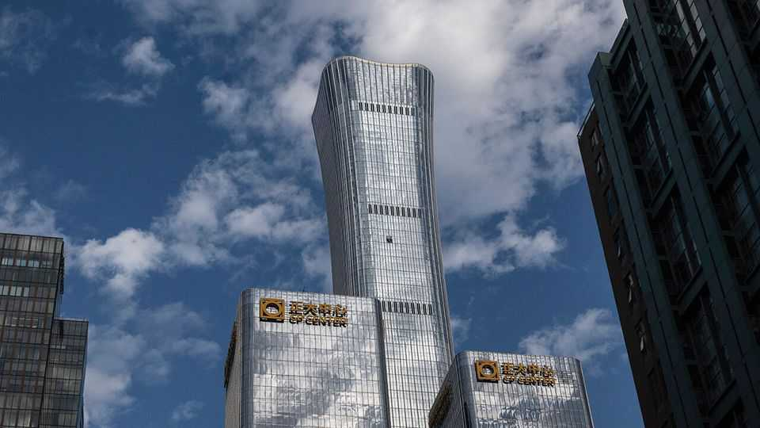

China hushes up a plane crash in the heart of its capital
A light aircraft flew into Beijing’s tallest building. A news blackout followed
July 2nd 2026

On july 1st the Chinese Communist Party celebrated the 105th anniversary of its founding. The event was marked this week by a concert attended by China’s leader, Xi Jinping, and a state ceremony at the Great Hall of the People. But for the organisers the lead-up to the celebrations was overshadowed by a troubling incident in the heart of Beijing, not far from where the ceremonies would be staged: a security lapse on the evening of June 26th that was both unusual and embarrassing. A two-seater plane took off from an airfield on the outskirts of Beijing, then crashed into citic Tower, the capital’s tallest building. This happened a few kilometres from a complex where the Communist Party’s leadership lives.
Few Chinese people will have even heard about the incident. There followed a near-complete news blackout, except a terse statement saying the pilot had died and 13 people were injured. On July 2nd authorities said he was a 66-year-old man surnamed Liu, who had mental-health problems, and suggested he had taken his own life. Staff in the building, which is known as “China Zun” after a Bronze Age jug that inspired its design, were told not to talk to anyone about the incident. Even online photographs of the building, unrelated to the crash, are reported to have been removed from Chinese social media.
The crash was captured on video from a nearby building, but that dramatic footage and any other speculation about it, including discussion of whether the pilot crashed deliberately, have been censored. The small hole made by the plane in the building’s side (pictured) has been covered up and police have cordoned off the area. Light aircraft have reportedly been grounded across the country.
Beijing is one of the most tightly secured cities in the world. Street corners bristle with surveillance cameras. Police and plainclothes officers swarm around areas like Tiananmen Square (close to citic Tower). Chinese citizens driving into the capital from other parts of the country usually have to go through security checkpoints. Airspace is especially restricted, with a permanent no-fly zone of 100 sq km over central Beijing. Even buying drones is banned within the city limits, and owners have to register with the police. Flying them is only possible with approval from authorities.
China-watchers have been shocked, noting that if a small plane can hit the citic Tower, it would be easy for a drone or a missile to do so, too. That such an event could happen in the heart of Beijing is a “massive security breach”, wrote Bill Bishop, an analyst at Sinocism, a consultancy, on X. This is an “earthquake” in Beijing’s security system, he added. “Not many more seconds of flying and [the crash] could have been at Zhongnanhai”, the leadership compound. The Straits Times, a Singapore newspaper, reported that public flight-tracking data show a Hainan Airlines jet only narrowly avoided colliding with the light aircraft as it flew towards central Beijing.
The crash will also have been noticed by developers of one of the Communist Party’s pet projects, the “low-altitude economy” of drones and self-flying cars. Last year a Chinese company became the first maker of electric vertical take-off and landing (evtol) aircraft to receive a licence to fly passengers commercially. The civil-aviation authority reckons the low-flying economy will reach a turnover of 3.5trn yuan ($515bn) by 2035. But Mr Bishop suggests the crash is unlikely to hurt that nascent industry in the long term, and “may end up being constructive as it forces a regulatory revamp”.
Still, the incident is undoubtedly causing consternation in security circles in Beijing. It comes as China’s armed forces and defence ministry are already reeling from a years-long purge aiming to stamp out corruption. Now more officers may lose their jobs. Some analysts are comparing the crash to an incident in 1987, when an amateur West German pilot named Mathias Rust landed his light aircraft in Moscow’s Red Square, exposing the weakness of Soviet air defences. Several high-ranking defence officials lost their jobs as a result. ■
Subscribers can sign up to Drum Tower, our new weekly newsletter, to understand what the world makes of China—and what China makes of the world.